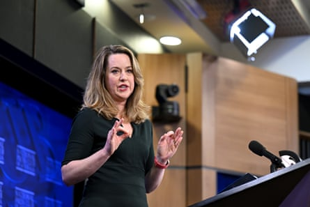

The head of the UN’s organisation for migration has warned that it is too late to stop people from crossing the Channel in small boats by the time they have reached northern France , as Keir Starmer and Emmanuel Macron prepare to announce new measures to stop overloaded dinghies setting sail from French shores to the UK.
Amy Pope, the director general of the International Organization for Migration (IOM), said making safe and orderly migration possible closer to the countries people were moving from was a better approach, along with removing the toxic anti-migrant narrative that dominates much of UK politics.
“We have to make migration boring again,” she said.
Much of the reporting of Macron’s state visit to the UK this week has focused on a plan to prevent people from reaching the UK by intercepting dinghies in waters up to 300 metres from the French shore.
Pope said that by the time people reached northern France they had already invested a huge amount in getting to the UK, often spending thousands of pounds on paying smugglers. Families would be counting on them to reach their planned destination.
“Every single step they take cements the likelihood that they are committing to that journey,” she said.
Pope believes there are more effective solutions to the crisis, including providing opportunities for orderly and regulated migration and providing support in people’s first country of destination so that they do not feel compelled to keep on moving farther afield until they find a country where they are safe and can thrive.
“We need far earlier intervention,” she said. “If we want to stop small boat crossings we need to be looking at the point where someone is making the decision that their best interest is in taking the boat – that’s much earlier. It’s not on the shores of Calais. You can’t just take on the Channel without taking on the wider issue.”
Pope has been holding talks with the UK government on her brief visit to London. She is sceptical about the efficacy of a dinghy pushback policy.
Amy Pope said earlier intervention was required, including providing support in people’s first destination so they did not feel compelled to keep on moving.Photograph: Lukas Coch/AAP
“There’s not a lot of evidence to show that techniques like pushbacks, done in isolation, will have a meaningful impact.”
Asked whether the UK government was taking this onboard she said ministers were open to having a better understanding of what’s happening in terms of the movement of people.
“I think they realise that dealing with the situation in the Channel is probably going to be the least effective and have the highest human cost.”
She cited an example of IOM’s work in Colombia providing mobile health clinics to help support the large numbers of Venezuelans crossing the border into Colombia, to try to help prevent Colombia becoming overwhelmed by the number of new arrivals.
Pope believes there is a way to detoxify the political discourse that is pushing hostile narratives about migration.
“We have to find a way to pull solutions out of the political space.”
She said that the more migration challenges could be dealt with in an apolitical, bureaucratic space, the more successful governments were likely to be in responding to them.
“I’m American and one of the things I’ve learned is the importance of setting aside who is progressive and who is conservative and how to make this work on the ground. We have to break through the political noise and do something that’s much more strategically important.”
She said migration and development had to be addressed together as they were interconnected, rather than only looking at stopping dinghies.
“What worries me most in the current conversation is that it’s coming at the same time as the UK is planning to decrease both humanitarian and development assistance.
“I speak to a lot of migrants. The bottom line is they are human beings and making the decisions that other human beings would make. What we know about human civilisation is that people migrate.”